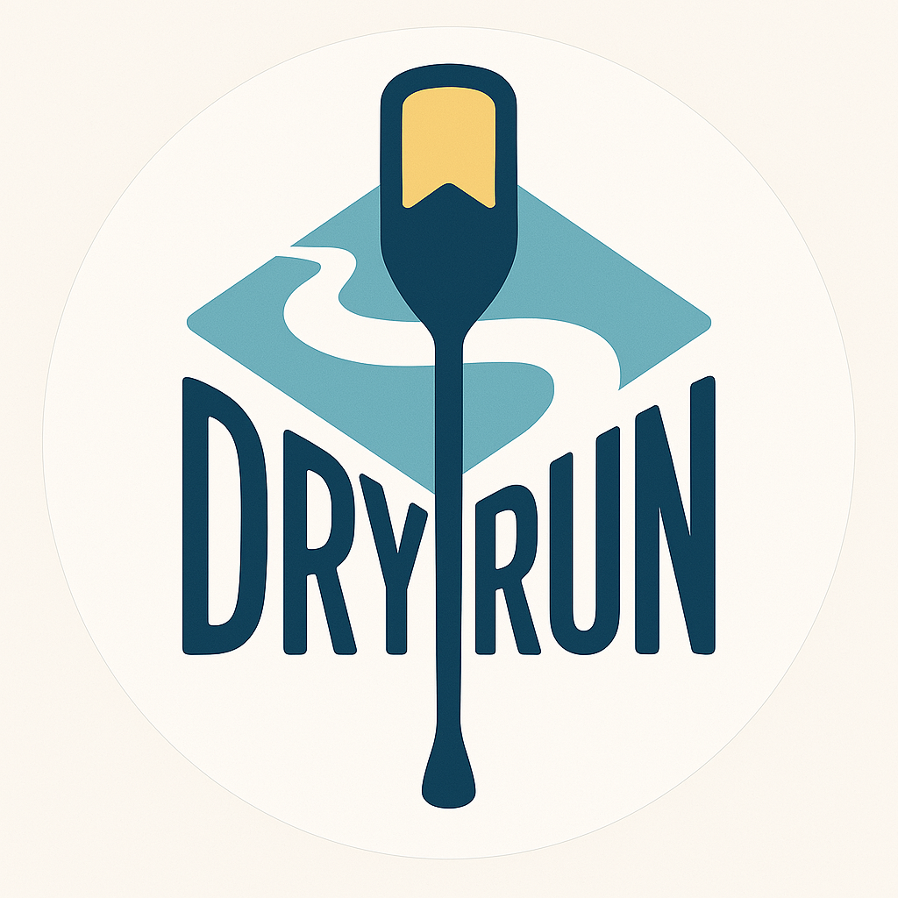
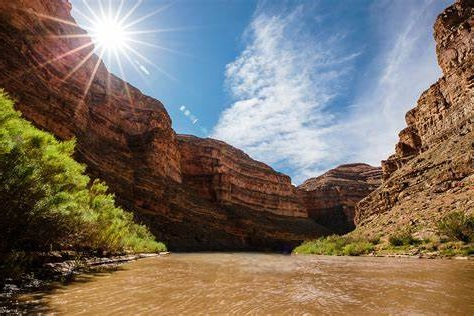
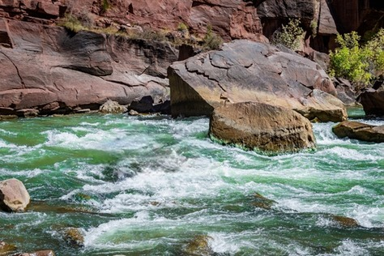
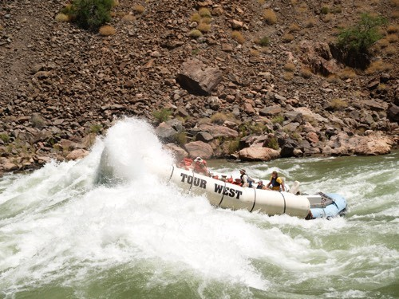

Discover Your River
Experience the thrill of navigating the next challenge

San Juan River
Scenic canyon passages geared toward a beginning level of experience with gentle flows. Offering relaxing family-friendly trips with significant native-heritage encounters.

Green River
Intermediate challenges for the team or family looking to build teamwork skills

Colorado River
World-Class challenges cut through ancient landscapes and geological timeframes. Adventure descent through spectacular landscapes.